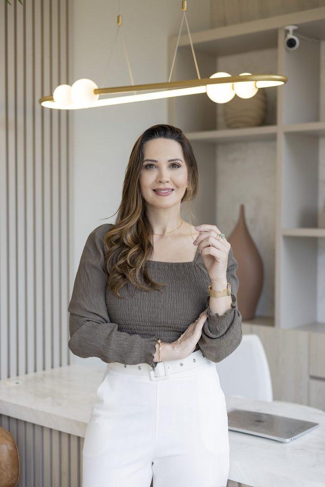

Jacqueline Eidt · Neuropsicopedagoga Clínica
A Jornada MAP é um acompanhamento individualizado para quem quer descobrir — ou reconstruir — a carreira certa para o seu funcionamento.
Agendar meu novo caminhoPara jovens, adultos e pessoas em transição de carreira com TDAH, autismo ou altas habilidades

Para quem é
Jovem no terceirão
Está prestes a entrar na faculdade — ou no mercado — e não consegue decidir. Vamos juntos descobrir qual área respeita o seu perfil e o seu jeito de funcionar.
Adulto em transição
Sabe que está no lugar errado. Ainda não encontrou o certo. Vamos traçar juntos uma nova direção profissional — com método, não com achismo.
Quem está travado
Tem potencial, tem diagnóstico, mas a vida profissional ainda não começou a funcionar de verdade. É exatamente para isso que o MAP foi criado.
O que você está vivendo
"Sabe o que quer fazer.
Não consegue fazer."
Como funciona
M
Entendemos como você funciona de verdade — suas forças, seus padrões, seus bloqueios. Sem julgamento, com profundidade.
A
Construímos estratégias reais e personalizadas para o seu perfil. O que funciona para outros pode não funcionar para você — e tudo bem.
P
Você coloca em prática com acompanhamento. Não sozinha. Não no escuro. Com uma profissional do seu lado em cada passo.
O que está incluído
Quem vai estar com você
Sou Jacqueline Eidt, neuropsicopedagoga clínica.
Com mais de 2.000 horas de atendimento clínico, pós-graduada em Análise do Comportamento e em Gestão e Orientação de Carreira, entendo não só o que trava — mas por que trava, com base em como o cérebro funciona.
Desenvolvi o Método MAP porque percebi que o diagnóstico explica. Mas não resolve. A pessoa precisa de um caminho — e de alguém que entenda profundamente como ela funciona para construir esse caminho junto.
Atendo online para todo o Brasil e presencialmente em Foz do Iguaçu, PR.
Próximo passo
Entre em contato pelo WhatsApp. Nossa equipe vai te responder e entender o que você precisa — antes de qualquer compromisso.
Nossa equipe entra em contato em até 48h — o primeiro passo é uma consulta com a Jacqueline.
O que dizem as clientes
"Dra Jacque é maravilhosa! Escuta com empatia e atenção, acompanha no nosso processo de pós diagnóstico. Só tenho elogios!!"
Katia B.
Google Business
"A Jaqueline é uma profissional excepcional, extremamente atenciosa, dedicada e competente. Desde o primeiro atendimento, demonstrou empatia, sensibilidade e profundo conhecimento. Com certeza, sua atuação fez toda a diferença no meu desenvolvimento. Recomendo com toda certeza!"
Camila K.
Google Business
"Desde o primeiro contato fui muito bem acolhida. A Jacque é uma pessoa sensacional, tem muita empatia, uma profissional diferenciada. Tive uma grande evolução após a avaliação, me abriu novos horizontes. Gratidão!"
Mery M.
Google Business